생산자동화산업기사 (2005-03-06 기출문제)
1과목: 기계가공법 및 안전관리
1. 길이 측정기가 아닌 것은?
- 하이트게이지
- 마이크로미터
- 버니어캘리퍼스
- 컴비네이션 스퀘어
(정답률: 43%)

2. 연삭숫돌에 다음과 같은 기호가 표기되어 있다. 연삭숫돌 입자의 재질은?
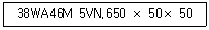
- 백색알루미나
- 녹색탄화규소
- 흑자색탄화규소
- 다이어몬드
(정답률: 63%)
3. 지름 50㎜인 연강 둥근 봉을 20m/min의 절삭 속도로 선삭할 때, 스핀들의 회전수는?
- 100.1 rpm
- 127.3 rpm
- 440.2 rpm
- 500.5 rpm
(정답률: 70%)
4. ø20H7g6로 끼워 맞추었다면 끼워맞춤의 종류는?
- 헐거운 끼워맞춤 이다.
- 중간 끼워맞춤 이다.
- 억지 끼워맞춤 이다.
- 억지 중간 끼워맞춤 이다.
(정답률: 43%)
5. 가공경화(work hardening)현상이란?
- 소성변형에 대하여 경도가 감소하는 현상이다.
- 소성변형에 대하여 저항이 증가하는 현상이다.
- 입자들 사이에 슬립이 생기는 현상이다.
- 결정격자가 변화하는 현상이다.
(정답률: 48%)
6. 산소병을 취급할 때 주의사항으로 틀린 것은?
- 밸브 등에 기름을 주유하여 사용한다.
- 충격을 주지 않는다.
- 밸브의 개폐는 천천히 한다.
- 직사광선에 노출시키지 않는다.
(정답률: 77%)
7. 단조용 드롭 해머(drop hammer)의 종류가 아닌 것은?
- 링(ring) 드롭 해머
- 로우프(rope) 드롭 해머
- 판(板) 드롭 해머
- 벨트(belt) 드롭 해머
(정답률: 50%)
8. 강철을 NaCN과 KCN을 주성분으로 하여 표면경화하는 방법은?
- 질화법
- 피막법
- 청화법
- 화염경화법
(정답률: 40%)
9. 소성가공에서 열간가공과 냉간가공을 구분하는 온도는?
- 금속이 녹는 온도
- 변태점 온도
- 발광 온도
- 재결정 온도
(정답률: 56%)
10. 가공물을 양극으로 하고 불용해성인 납, 구리를 음극으로 하여 전해액 속에 넣으면 가공물의 표면이 전기에 의한 화학작용으로, 매끈한 면을 얻을 수 있는 방법은?
- 전기화학가공
- 전해연마
- 방전가공
- 화학연마
(정답률: 60%)
11. 도가니로의 규격 표시법은 무엇인가?
- 1회에 용해할 수 있는 구리의 중량으로 표시
- 1시간에 용해할 수 있는 최대량으로 표시
- 1일에 용해할 수 있는 최대량으로 표시
- 1KW로 용해할 수 있는 알루미늄의 중량으로 표시
(정답률: 42%)
12. 가스용접시 역화(back fire)의 원인 중 틀린 것은?
- 혼합가스의 연소속도가 분출속도보다 낮을 때
- 팁의 구멍이 불결할 때
- 팁의 구멍이 확대 변형되었을 때
- 작업 중 불꽃이 역행할 때
(정답률: 35%)
13. 드릴링의 조건으로 절삭속도 30m/min, 드릴지름 20mm, 이송 0.1mm/rev, 드릴끝 원추의 높이 5.8mm이라 하고 깊이 90mm의 구멍을 절삭하는 데 소요되는 시간은?
- 1.5 min
- 2.0 min
- 3.0 min
- 3.5 min
(정답률: 57%)
14. 버니어 캘리퍼스의 버니어 눈금 방법에서 어미자 19㎜를 20등분할 때 최소 읽기의 값은?
- 0.02 ㎜
- 0.03 ㎜
- 0.04 ㎜
- 0.⑤ ㎜
(정답률: 43%)
15. 파텐팅(patenting) 열처리를 옳게 나타낸 것은?
- 냉간 가공전에 시행하는 항온 변태 처리이다.
- 냉간 가공후에 시행하는 계단 담금질이다.
- 펄라이트 조직을 안정화 시키는 처리이다.
- 미세한 오스테나이트 조직을 주는 처리이다.
(정답률: 34%)
16. 목형 제작에서 주물자(shrinkage scale)를 사용하는 이유는?
- 주형을 만들 때 흙이 줄기 때문에
- 쇳물이 굳을 때 줄기 때문에
- 주형을 뽑을 때 움직이기 때문에
- 나무가 줄기 때문에
(정답률: 34%)
17. 프레스 작업에서 스프링 백(spring back)의 설명으로서 틀린 것은?
- 탄성 한도 및 강도가 클수록 스프링 백의 양은 커진다.
- 다이의 어깨나비가 작을수록 스프링 백의 양이 커진다.
- 동일 두께의 판에서 굽힘 각도가 예리할수록 스프링 백의 양은 커진다.
- 동일 재료인 경우, 굽힘 반경이 작을 수록 스프링 백의 양은 커진다.
(정답률: 31%)
18. 형단조(型鍛造)에서 플래쉬(flash)의 주된 역할로 맞는 것은?
- 단형을 보호한다.
- 단형 내부의 재료를 부족하게 한다.
- 단형에서 남은 재료가 밀려 나가게 한다.
- 단형 내부의 압력을 낮춘다.
(정답률: 31%)
19. 진직도의 측정에 사용되는 측정기가 아닌 것은?
- 직선자(straight edge)
- 수준기(level)
- 스냅 게이지(snap gauge)
- 오토콜리메이터(auto collimator)
(정답률: 15%)
20. 절삭공구재료로 사용하는 스텔라이트의 주성분은?
- W - C - Co - Cr - Fe
- W - C - Cu - Fe
- Co - Mo - C - Fe
- Co - C - W - Cu - Fe
(정답률: 24%)
2과목: 기계제도 및 기초공학
21. 체결용 나사가 자립상태(自立狀態)를 유지하고 있을 경우 나사의 효율은 몇 % 이하인가?
- 50
- 60
- 70
- 80
(정답률: 37%)
22. 모듈(module) 2, 피치원지름 60 mm인 표준 스퍼어 기어의 잇수는?
- 30
- 40
- 50
- 60
(정답률: 69%)
23. V 벨트의 각도는 몇 도가 기준인가?
- 40°
- 43°
- 44°
- 46°
(정답률: 67%)
24. 미끄럼 베어링의 볼 베어링에 대한 비교 중 틀린 것은?
- 내충격성이 크다.
- 소음이 크다.
- 고온에 약하다.
- 교환성이 나쁘다.
(정답률: 30%)
25. 하중 3ton이 걸리는 압축코일 스프링의 변형량이 10㎜일 때 스프링 상수는 몇 ㎏f/㎜인가?
- 300
- 1/300
- 100
- 1/100
(정답률: 45%)
26. 지름 20mm, 피치 2mm인 2줄 나사를 10회전 시켰더니 완전하게 체결되었다. 이 나사의 리드(lead)는 몇 mm인가?
- 20
- 40
- 4
- 2
(정답률: 12%)
27. 레이디얼 저널베어링에 작용하는 압력 P를 구하는 식은? (단, W : 베어링하중, d : 저널의 지름, ℓ : 저널의 길이이다.)
- P = (dℓ)/W
- P = W/(dℓ)
- P = d/(Wℓ)
- P = W/(d2ℓ)
(정답률: 53%)
28. 핀 전체가 두 갈래로 되어있어 너트의 풀림 방지나 핀이 빠져 나오지 않게 하는데 사용되는 핀은?
- 테이퍼핀
- 너클핀
- 분할핀
- 평행핀
(정답률: 57%)
29. 긴장측 장력 Tt가 이완측 장력 Ts의 2배인 경우 긴장측 장력을 160㎏f라 할 때 유효 장력은 몇 ㎏f인가? (단, 원심력의 영향은 무시한다.)
- 80
- 90
- 160
- 320
(정답률: 23%)
30. 성크키이의 폭, 높이, 길이가 각각 12(mm), 8(mm), 140(mm)일 때 키이의 접선력(kgf)은 얼마인가? (단, 허용전단응력 800kgf/cm2 이다.)
- 1344
- 1544
- 13440
- 15440
(정답률: 40%)
31. 물체의 형상 표현방법에서 3차원적인 물체의 모델링 방법에 속하지 않는 것은?
- Wireframe modeling
- Surface modeling
- Solid modeling
- Cubic modeling
(정답률: 27%)
32. 다음은 정보용량의 단위이다. 가장 큰 것은?
- B
- GB
- KB
- MB
(정답률: 70%)
33. CNC 공작기계에서 주로 프로그램을 점검할 때 사용하며 축의 실제 이동없이 CRT 상태에서만 위치 이동을 표시하는 기능을 가진 것은?
- Optional block skip
- Machine lock
- Single block
- Dry run
(정답률: 32%)
34.
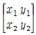
가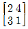
인 직선을 x방향으로 -1, y방향으로 3 만큼 이동시킨 결과는?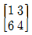
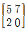
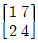
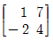
(정답률: 50%)
35. 다음 곡선 중 주어진 점들을 모두 통과하는 곡선(curve)은 어느 것인가?
- 베지어 곡선
- 스플라인 곡선
- 투영 곡선
- 실루엣 곡선
(정답률: 57%)
36. 다음 중 CAD의 효과가 아닌 것은?
- 설계의 생산성 향상
- 설계시간의 과다
- 설계작업의 정확성
- 설계작업의 표준화
(정답률: 60%)
37. 200rpm으로 회전하는 스핀들에서 5회전 휴지(dwell)를 프로그램하려면 어떻게 지령하여야 하는가?
- G04 X1.5;
- G04 X0.7;
- G40 X1.5;
- G40 X0.7;
(정답률: 58%)
38. 캐시 기억장치(cache memory)에 대한 설명으로 적당한 것은?
- 연산장치로서 주로 사칙연산에 이용된다.
- 제어장치로서 명령해독에 주로 사용된다.
- 보조 기억장치이다.
- 중앙처리장치와 주기억장치 사이의 속도차이를 극복하기 위해 사용한다.
(정답률: 50%)
39. 다음 프로그램의 ( )안에 생략된 모달(modal) 준비 기능은?
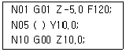
- G00
- G01
- G40
- G92
(정답률: 34%)
40. NC공작기계의 절삭 제어방식 중 PTP(point to point) 제어라고도 하며, 드릴링 머신, 스폿용접기, 펀치 프레스 등에 적용되는 작업으로 맞는 것은?
- 직선 절삭제어
- 위치 결정제어
- 윤곽 절삭제어
- 원호 절삭제어
(정답률: 70%)
3과목: 자동제어
41. 대부분의 PLC에서 ADD 명령의 용도는?
- 10진수로 보정한 후 더한다.
- 레지스터 내용을 더한다.
- 파일을 더한다.
- 직접 곱한다.
(정답률: 59%)
42. 다음 중 피드백 제어계의 특징이 아닌 것은?
- 구조가 간단하다.
- 대역폭이 증가한다.
- 비선형성과 왜형에 대한 효과가 감소한다.
- 정확성이 증가한다.
(정답률: 40%)
43. PLC 구성시 출력신호와 관계가 없는 것은?
- 표시등
- 부저
- 구동부
- 광센서
(정답률: 54%)
44. 다음 센서 중에서 직접 디지털 신호를 출력으로 하는 것은?
- 엔코더
- 포텐쇼미터
- 스트레인게이지
- 차동트랜스
(정답률: 53%)
45. 단위 피드백 시스템의 전방 경로 함수 G(s)= 10/(s+1)(s+3)(s+5) 일 때 스탭 입력 us(t) =5를 인가하였다면, 정상상태 오차는?
- 0
- 3
- 5
- ∞
(정답률: 42%)
46. 정보처리 회로에서 서보 기구로 보내는 신호의 형태는?
- 전류
- 전압
- 변위
- 펄스
(정답률: 58%)
47. 다음은 제어용기기에 대한 설명들이다. 옳지 않은 것은?
- 전기 접점에서 보통은 열려 있다가 작동되면 닫히는 접점을 b접점이라 한다.
- 도체에 흐르는 전류의 크기는 도체의 저항에 반비례한다.
- 일반 전기 릴레이는 많은 독립회로를 개폐할 수 있어야 한다.
- 전자 접촉기란 적은 양의 제어동력으로 고부하를 개폐시키는 자장으로 작동되는 스위치이다.
(정답률: 47%)
48. 아래 그림과 같은 블록선도의 전달함수로 올바른 것은?
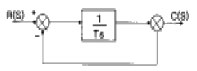
- 1/Ts
- 1/Ts+1
- Ts+1
- Ts
(정답률: 56%)
49. 다음 중 자동제어를 적용한 경우의 특징이 아닌 것은?
- 원자재비 증가
- 제품 품질의 균일화
- 연속작업
- 신속한 작업
(정답률: 60%)
50. 마이크로프로세서의 어드레스 단자가 16개이고, 데이터 단자가 8개이면 메모리의 최대 크기로 맞는 것은?
- 64kbyte
- 128kbyte
- 256kbyte
- 512kbyte
(정답률: 39%)
51. 다음에서 실린더의 피스톤 속도를 증가시키고자 할 때 사용할 수 있는 밸브는?
- 이압밸브
- 셔틀밸브
- 급속배기밸브
- 속도조절밸브
(정답률: 34%)
52. 다음의 회로는 유압의 미터-인 속도 제어회로이다.장점에 해당하지 않는 것은?
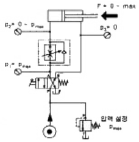
- 피스톤 측에만 압력이 걸린다
- 낮은 속도에서 일정한 속도를 얻는다
- 조절된 유압유가 실린더 측으로 인입되는데 실린더 측의 면적이 실린더 로드측 면적보다 크므로 낮은 속도 조절 면에서 유리하다
- 부하가 카운터 밸런스 되어 있어 끄는 힘에 강하다
(정답률: 27%)
53. 공기압 조정 유닛에서 공급되는 공기압이 6bar이고 실린더의 단면적이 10㎝2라고 하면 작용할 수 있는 하중은 몇 kgf까지인가?
- 6kgf
- 60kgf
- 600kgf
- 6000kgf
(정답률: 31%)
54. 공압시스템의 장점에 해당되는 것은?
- 큰힘을 낼 수 있다.
- 정밀한 속도 조절이 가능하다.
- 제어방법 및 취급이 간단하다.
- 배기소음이 작다.
(정답률: 56%)
55. 회로압이 설정압을 넘으면 막이 유체압에 의하여 파열되어 압유를 탱크로 귀환시킴과 동시에 압력상승을 막아 기기를 보호하는 것은?
- 압력스위치
- 유체퓨즈
- 카운터밸런스밸브
- 감압밸브
(정답률: 45%)
56. 2개 이상의 유압실린더를 동일한 속도로 동작시키고자 할때 실린더 조립상의 오차, 부하 분포의 불균일, 마찰저항의 차이 등으로 차이가 나는 것을 방지하기 위한 방법으로 틀린 것은?
- 유량조절밸브를 이용하여 조정한다.
- 동일한 모터를 실린더 개수 만큼 설치하여 기계적으로 동일회전수를 갖게 하므로 공급유량을 동일하게 한다.
- 각각의 실린더에 체크밸브를 설치하여 조정한다.
- 유압실린더를 직렬로 설치하여 공급유량을 동일하게 한다.
(정답률: 34%)
57. 다음 기호 중 가열기는?
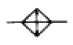
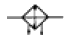
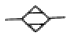
(정답률: 29%)
58. 공기압 장치에 사용되는 압축공기의 장점이 아닌 것은?
- 청결성
- 안전성
- 윤활성
- 저장성
(정답률: 50%)
59. 다음 기호의 설명으로 옳은 것은?
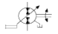
- 가변용량형, 2방향유동, 외부드레인, 인력조작
- 가변용량형, 2방향유동, 내부드레인, 인력조작
- 가변용량형, 2방향유동, 외부드레인, 조작기구미지정
- 정용량형, 2방향유동, 외부드레인, 인력조작
(정답률: 35%)
60. 관(튜브)의 끝을 원뿔형으로 넓힌 구조를 가진 관 이음쇠는?
- 스위블 이음쇠
- 플레어드 관 이음쇠
- 셀프 실 이음쇠
- 플랜지 관 이음쇠
(정답률: 38%)
4과목: 메카트로닉스
61. 다음 그림에서 X의 값은?
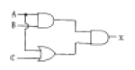
- A+B+C
- AB(A+C)
- ABC
- B(A+C)
(정답률: 50%)
62.
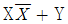
를 간략화한 것은?- X
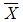
- 1
- Y
(정답률: 56%)
63. 미리 정해 놓은 시간적 순서대로 제어의 각 단계를 순차적으로 진행시키는 제어 방법은?
- 되먹임제어
- 자동제어
- 피드백제어
- 시퀀스제어
(정답률: 54%)
64. PLC가 판단할 수 있는 언어로 프로그램을 작성하여 저장하는 것은?
- 프로그래밍(Programming)
- 래더도(Ladder Diagram)
- 수치제어(NC)
- 더미(Dummy)
(정답률: 39%)
65.
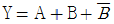
의 부울대수에서 Y를 간략화 하면 어떻게 표시될 수 있는가?- Y=A+B
- Y=1
- Y=B
- Y=A
(정답률: 19%)
66. 다음의 전기 심벌이 나타내고 있는 것은?
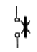
- 열동 계전기
- 배선용 차단기
- 휴즈
- 전자 접촉기
(정답률: 34%)
67. 다음 중 시퀀스(Sequence)제어에서 사용하는 프로그램 방식이 아닌 것은?
- 논리연산방식
- 플로우 챠트(Flow chart)방식
- 브릿지(Bridge)방식
- 래더(Ladder)방식
(정답률: 32%)
68. 제어계 요소의 전달함수 중 비례요소에 해당하는 것은?
- K
- Ks
- 1/Ks
- K/1+Ts
(정답률: 17%)
69. 전개 접속도는 동작순서에 따라 알기 쉽게 전개하여 그린 접속도이다. 그리는 방법은 가로그리기와 세로그리기가 있다. 이것을 무엇이라 하는가?
- 이면배선도
- 시퀀스 회로도
- 배선도
- 실체배선도
(정답률: 59%)
70. 다음 중 PLC의 입·출력 장치가 아닌 것은?
- 릴레이
- 레지스터
- 근접 센서
- 솔레노이드
(정답률: 43%)
71. 충격 실린더(impact cylinder)의 특징이 아닌 것은?
- 상당히 큰 충격 에너지를 얻을 수 있다.
- 충격 실린더의 속도는 7.5-10m/sec까지 얻을 수 있다
- 큰 위치 에너지를 얻기 위해 설계된 실린더 이다.
- 일반적으로 복동 실린더의 형태이다.
(정답률: 15%)
72. 다음 중 센서에 대한 설명으로 잘못된 것은?
- 물리적인 값을 전기신호로 변환하는 장치이다.
- 자동화 시스템에서 중요한 역할을 한다.
- 정보의 전달을 기계적으로 수행하는 장치이다.
- 사람의 오감과 같은 역할을 하는 제어 시스템 요소이다
(정답률: 71%)
73. 다음 중 계전기에 의한 제어 시스템과 비교하여 PLC의 특징으로 볼 수 없는 것은?
- 프로그램의 변경으로 제어 동작의 변경이 가능하다.
- 프로그래밍 언어로 래더 다이어그램이 있다.
- 입출력 장치의 착탈이 용이하다.
- 장치 구성에 시간이 많이 소요된다.
(정답률: 53%)
74. 60㎐, 4극 유도 전동기의 회전자 속도가 1710rpm일 때 슬립과 회전자유기전압 주파수는?
- 5％, 3㎐
- 6％, 4㎐
- 7％, 5㎐
- 8％, 6㎐
(정답률: 25%)
75. 다음 중 유압펌프의 흡입불량으로 인하여 발생되는 결함이 아닌 것은?
- 토출유량의 감소
- 실린더 추력의 감소
- 작동유의 과열
- 펌프의 마모 및 파손
(정답률: 42%)
76. 모터의 운전시 브러시로부터 스파크가 일어나는 경우가 아닌 것은?
- 전기자 회로의 단선
- 보극의 극성 불량
- 과부하
- 계자회로의 단선
(정답률: 34%)
77. 다음 그림과 같이 불투명한 종이팩 안의 우유의 유·무를 검출해 낼 수 있는 센서는?
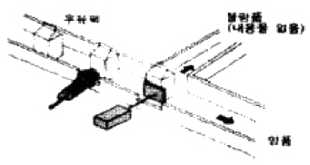
- 정전용량형 근접 스위치
- 고주파 발진형 근접 스위치
- 광전 스위치
- 리드 스위치
(정답률: 46%)
78. 반도체 메모리의 특징이 아닌 것은?
- 기계적 구동부가 없음
- 작은 크기
- 빠른 처리 속도
- 고자계 자성체
(정답률: 48%)
79. 직류 전동기의 회전수를 일정하게 유지하기 위해 전압을 변화시킨다. 이 때 회전수는 자동제어계의 구성에서 무엇과 같은가?
- 제어대상
- 제어량
- 조작량
- 입력값
(정답률: 31%)
80. 제어시스템에서 제어를 행하는 과정에 따른 분류 중 설명이 틀린 것은?
- 파일럿제어 - 메모리 기능이 없고 이의 해결을 위해 불논리 방정식을 이용한다.
- 메모리제어 - 출력에 영향을 줄 반대되는 입력신호가 들어올 때까지 이전에 출력된 신호는 유지된다.
- 시퀀스제어계 - 이전단계 완료여부를 센서를 이용하여 확인 후 다음단계의 작업을 수행한다.
- 조합제어 - 요구되는 입력 조건에 관계없이 그에 관련된 모든 신호가 출력된다.
(정답률: 47%)